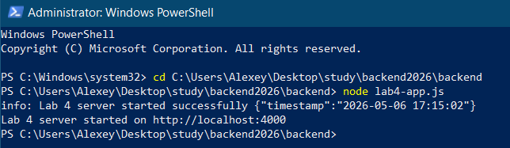
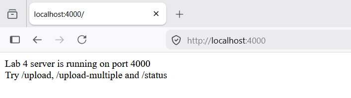
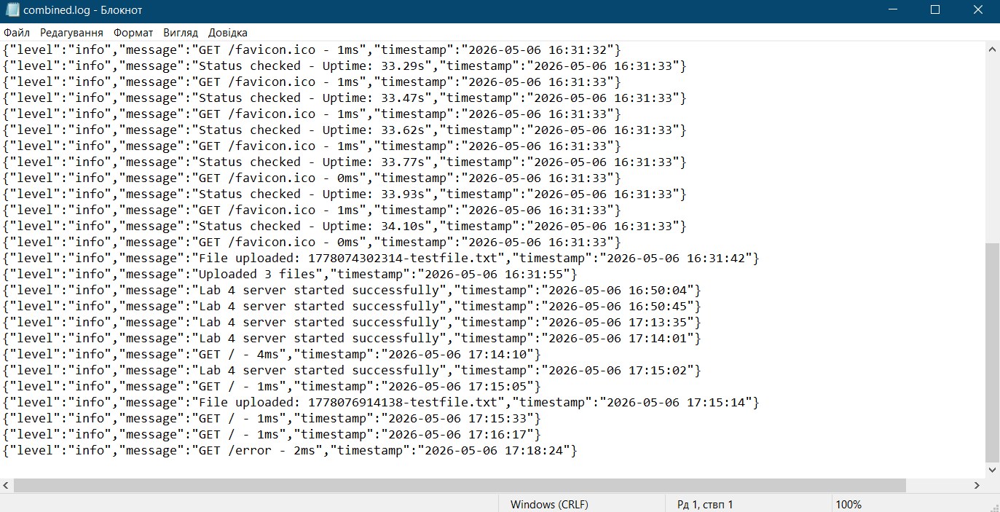
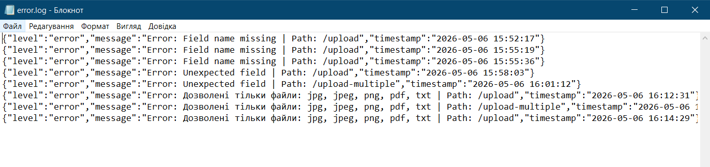
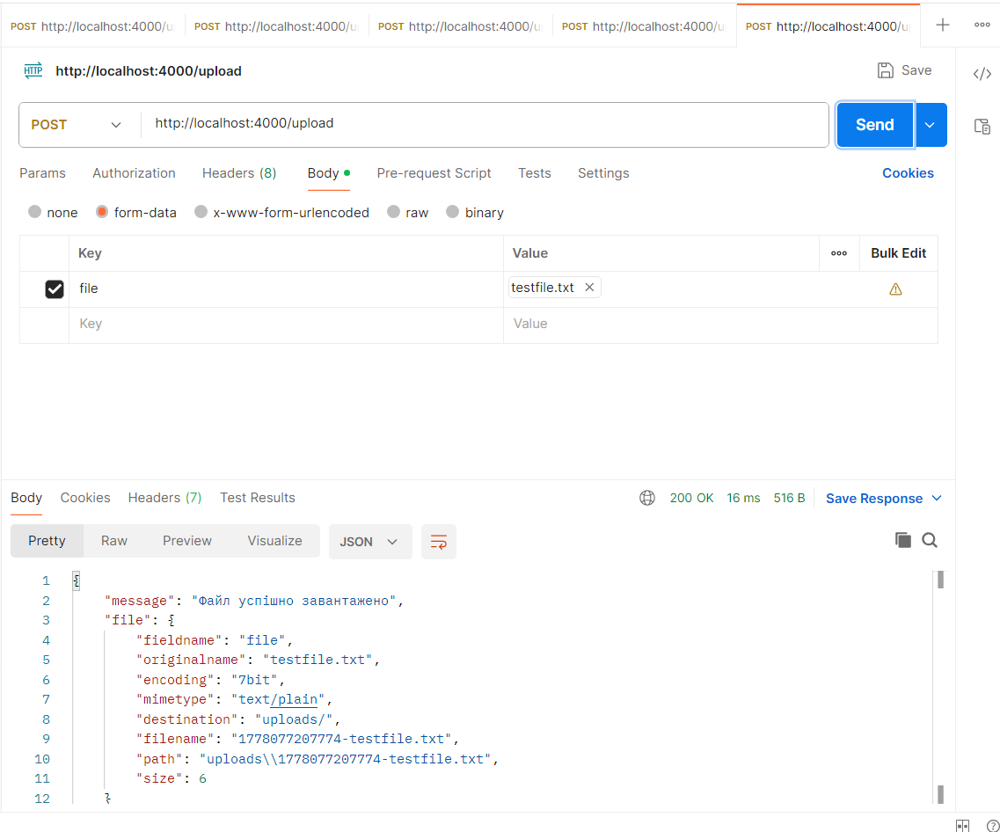
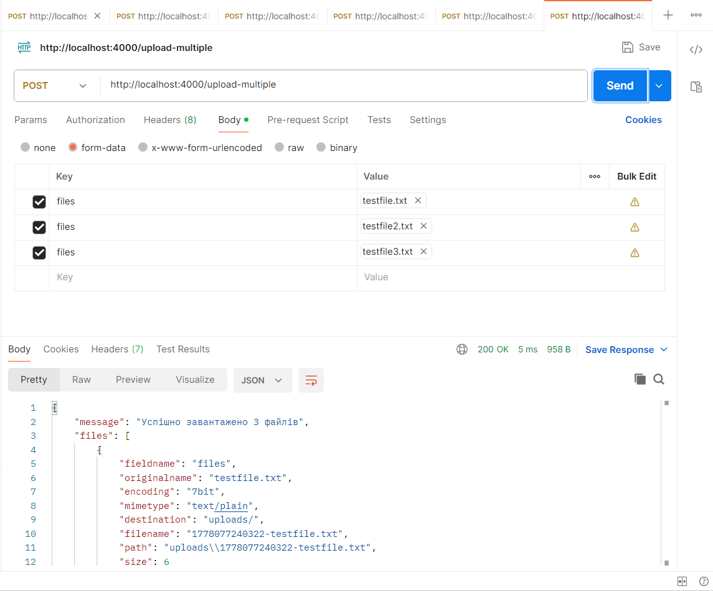
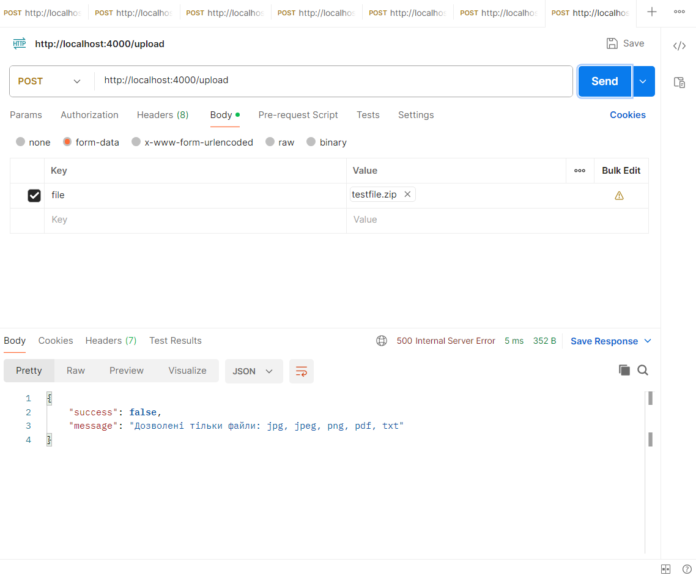
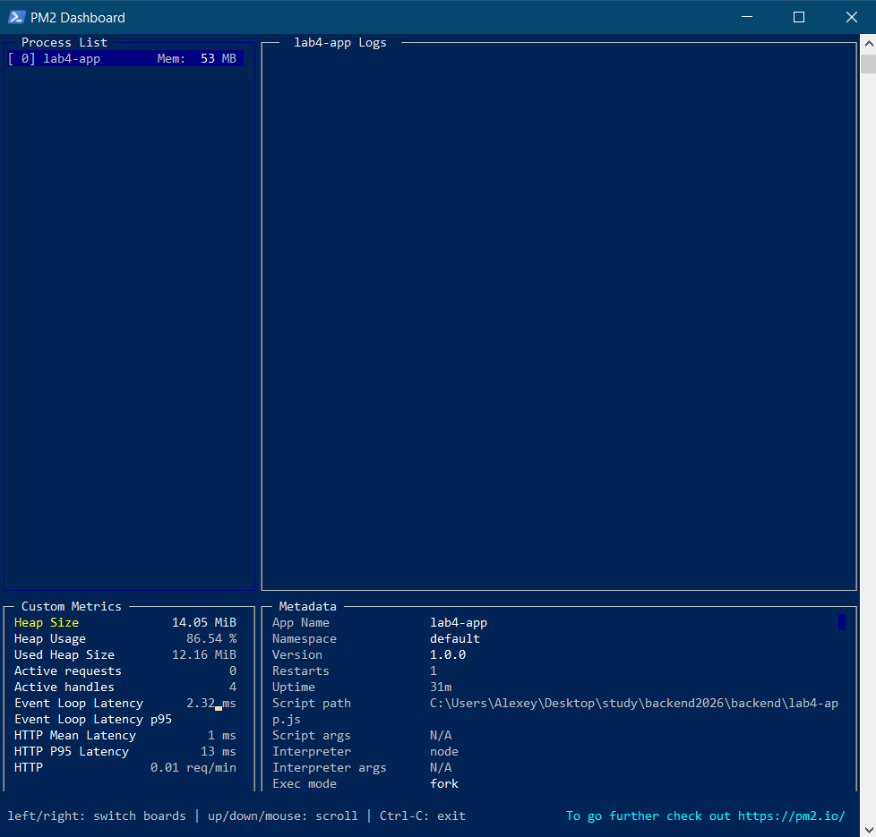

Національний технічний університет України
«Київський політехнічний інститут ім. Ігоря Сікорського»
Факультет інформатики та обчислювальної техніки
Кафедра обчислювальної техніки
на тему «Розширені можливості Node.js-додатків: логування, завантаження файлів, моніторинг продуктивності.»
студент ІІІ курсу ФІОТ
групи ІО-31
Бобруйко Олексій
Проскура С.Л.

Вибір предметної області. Аналіз, моделювання та розроблення адаптивного web-застосунку.
Актуальність теми
У сучасній розробці серверних застосунків на базі Node.js одним з ключових аспектів є не тільки функціональність, але й надійність, безпека та контроль роботи програми в реальному часі. Логування подій, завантаження файлів та моніторинг продуктивності є обов’язковими компонентами професійного backend-додатку. Вони дозволяють розробникам швидко знаходити помилки, аналізувати поведінку користувачів, забезпечувати безпеку завантажених файлів та вчасно виявляти проблеми з продуктивністю.
Мета роботи
Метою лабораторної роботи було ознайомлення з розширеними можливостями Node.js та Express.js, а саме: реалізацією ефективного логування HTTP-запитів і системних подій, організацією безпечного завантаження файлів на сервер за допомогою Multer, а також впровадженням інструментів моніторингу продуктивності застосунку (uptime, використання пам’яті та CPU).
Завдання роботи
- Ініціалізувати проєкт та створити базовий Express-сервер.
- Підключити Morgan та налаштувати логування всіх HTTP-запитів.
- Інтегрувати Winston для файлового логування подій з рівнями info та error.
- Реалізувати middleware для обробки помилок з логуванням через Winston.
- Реалізувати ендпоінт для завантаження одного файлу за допомогою Multer.
- Реалізувати ендпоінт для завантаження кількох файлів.
- Додати валідацію файлів (дозволені типи та обмеження розміру).
- Створити ендпоінт /status для моніторингу стану сервера.
- Реалізувати middleware для вимірювання часу обробки кожного запиту.
- Інтегрувати менеджер процесів PM2 для запуску та моніторингу застосунку.
Об’єкт роботи
Процес розробки серверного застосунку на базі Node.js та Express.js з розширеними можливостями: реалізація логування запитів і подій, організація завантаження файлів на сервер та моніторинг продуктивності в реальному часі.
Предмет роботи
Інструменти та технології для розширення функціональності Node.js-додатків: Morgan та Winston для логування, Multer для обробки та збереження файлів, вбудований модуль process та PM2 для моніторингу продуктивності (uptime, використання пам’яті та CPU).
Бізнес-логіка роботи
Бізнес-логіка лабораторної роботи полягає в забезпеченні стабільності, безпеки та контролю роботи серверного застосунку. Логування дозволяє швидко виявляти помилки та підозрілу активність, механізм завантаження файлів дає можливість користувачам передавати контент на сервер, а моніторинг продуктивності допомагає вчасно виявляти вузькі місця, запобігати збоям і оптимізувати ресурси сервера в реальному проєкті.
Функціональні вимоги
- Створити базовий Express-сервер, що відповідає на GET-запит /.
- Підключити Morgan та налаштувати логування всіх HTTP-запитів у консоль.
- Інтегрувати Winston для запису логів у файли (error.log та combined.log) з підтримкою рівнів info та error.
- Реалізувати middleware для обробки помилок з логуванням через Winston та поверненням JSON-відповіді.
- Реалізувати ендпоінт /upload для завантаження одного файлу за допомогою Multer.
- Реалізувати ендпоінт /upload-multiple для завантаження кількох файлів.
- Додати валідацію файлів (дозволені типи: jpg, jpeg, png, pdf, txt та обмеження розміру).
- Створити ендпоінт /status, який повертає uptime сервера та використання пам’яті (process.memoryUsage()).
- Реалізувати middleware для вимірювання та логування часу обробки кожного запиту.
- Запустити застосунок через PM2 та продемонструвати моніторинг (pm2 list, pm2 logs, pm2 monit).
Нефункціональні вимоги
- Використання структурованого логування (Morgan + Winston) з розділенням логів за рівнями та типами.
- Безпечне завантаження файлів з валідацією типу та обмеженням розміру.
- Автоматичне логування часу виконання кожного запиту.
- Централізована обробка помилок з детальним логуванням.
- Моніторинг продуктивності в реальному часі (uptime, пам’ять, CPU).
- Використання PM2 для запуску та управління процесом.
- Чітке розділення коду та дотримання принципів middleware.
- Легкість розгортання та тестування на іншому комп’ютері.
Посилання на репозиторій GitHub
https://github.com/BobruikoOleksii-KPI/backend-2026
Скріншоти роботи
Рис. 1. Запуск базового сервера та логування HTTP-запитів за допомогою Morgan
Демонстрація роботи основного сервера на порту 4000 та автоматичного логування всіх запитів через Morgan у консоль.


Рис. 2. Файлове логування подій за допомогою Winston
Створено файли combined.log та error.log. Winston записує події з часовою міткою та рівнями логування.

Рис. 3. Обробка помилок з логуванням через Winston
При виникненні помилки (ендпоінт /error) система логує її у error.log та повертає користувачу JSON-відповідь.

Рис. 4. Завантаження одного файлу за допомогою Multer
Успішне завантаження файлу через ендпоінт /upload. Файл зберігається в папку uploads/ з часовою міткою.

Рис. 5. Завантаження кількох файлів одночасно
Робота ендпоінту /upload-multiple. Підтримка одночасного завантаження до 5 файлів.

Рис. 6. Валідація файлів (перевірка типу та розміру)
При спробі завантажити файл недозволеного типу (наприклад .exe) Multer відхиляє запит з чітким повідомленням про помилку.

Рис. 7. Моніторинг продуктивності сервера (/status) та робота через PM2
Ендпоінт /status повертає uptime та використання пам’яті. Нижче — моніторинг через PM2 (pm2 monit та pm2 list).

Висновок
В ході виконання лабораторної роботи №4 було успішно реалізовано розширені можливості Node.js-додатків. Було налаштовано повноцінне логування HTTP-запитів за допомогою Morgan та професійне файлове логування подій і помилок за допомогою Winston. Реалізовано безпечне завантаження файлів (одного та кількох) з використанням Multer, включаючи валідацію типів файлів та обмеження розміру.
Також було впроваджено моніторинг продуктивності сервера: створено ендпоінт /status для отримання uptime та використання пам’яті, а також middleware для вимірювання часу обробки кожного запиту. Застосунок успішно запущено та протестовано через менеджер процесів PM2.
Всі 10 практичних завдань лабораторної роботи виконано. Отримані знання та навички дозволяють створювати надійні, контрольовані та масштабовані серверні застосунки, що є важливою частиною сучасної backend-розробки. Розроблений у рамках лабораторної роботи функціонал може бути легко інтегрований у більші проєкти, такі як FilmHub.